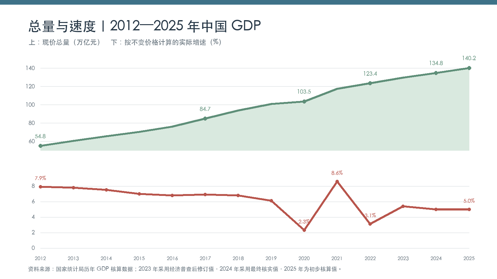
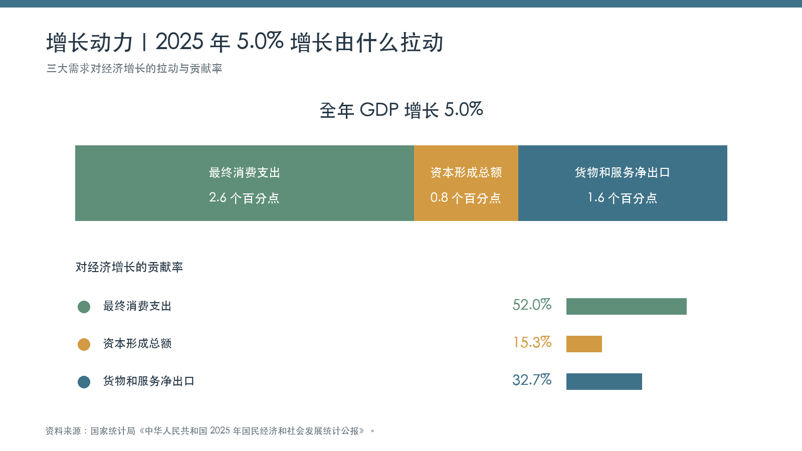
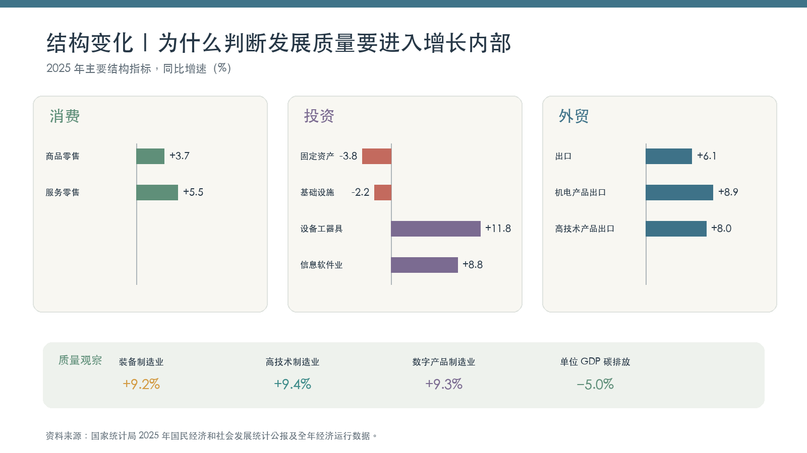
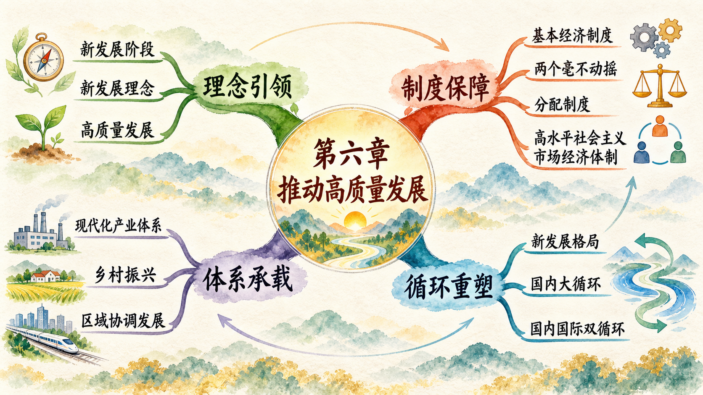

从“增长了多少”进入“发展得怎样”
2025 年，中国国内生产总值达到 1401879 亿元，按不变价格计算比上年增长 5.0%。这个总量和速度说明经济继续发展，却不能单独回答增长由什么拉动、产业能力是否增强、资源环境代价怎样、发展成果怎样惠及人民。推动高质量发展，需要把总量、结构、动力、效率、公平、安全放进同一个观察框架。

总量和速度是两个观察维度。现价 GDP 反映各年经济活动规模，按不变价格计算的增长率用于剔除价格变化后比较实际增长。经济体量扩大以后，同样一个百分点对应的增量更大；进入新的发展阶段，资源条件、人口结构、技术水平和外部环境也会改变增长方式。

最终消费支出、资本形成总额、货物和服务净出口共同形成当年经济增量。进一步进入结构内部，可以发现消费、投资、外贸和产业转型呈现不同变化。高质量发展的理论任务，正是解释怎样在结构分化和条件变化中形成新的发展动力。

资料来源：国家统计局《中华人民共和国 2025 年国民经济和社会发展统计公报》《2025 年经济发展向新向优 预期目标圆满实现》；2024 年 GDP 采用国家统计局最终核实值，2023 年采用第五次全国经济普查后修订值。
学习要点与教学目标
学习要点：
- 新发展理念的科学内涵和实践要求。
- 高质量发展的深刻内涵和重大意义。
- 坚持和完善社会主义基本经济制度。
- 构建以国内大循环为主体、国内国际双循环相互促进的新发展格局。
教学目标：
- 把握新发展阶段、新发展理念和高质量发展之间的逻辑关系。
- 理解社会主义基本经济制度怎样为高质量发展提供制度保障。
- 说明新发展格局怎样贯通生产、分配、流通和消费。
- 从产业链、创新链、供应链、价值链和区域协作理解现代化经济体系。
重点难点
- 如何完整、准确、全面理解新发展理念？
- 为什么高质量发展是全面建设社会主义现代化国家的首要任务？
- 怎样理解社会主义基本经济制度的新概括？
- 为什么要加快构建新发展格局？
教学目标
完成本章学习，你应能够运用多维指标判断发展质量；能够从所有制、分配制度和资源配置方式分析经济制度；能够用循环视角解释消费、生产、投资与外贸的联系；能够沿着“主体—机制—结果—反馈”分析新能源汽车、平台经济和 AI 基础设施等现实问题。
章节大纲
